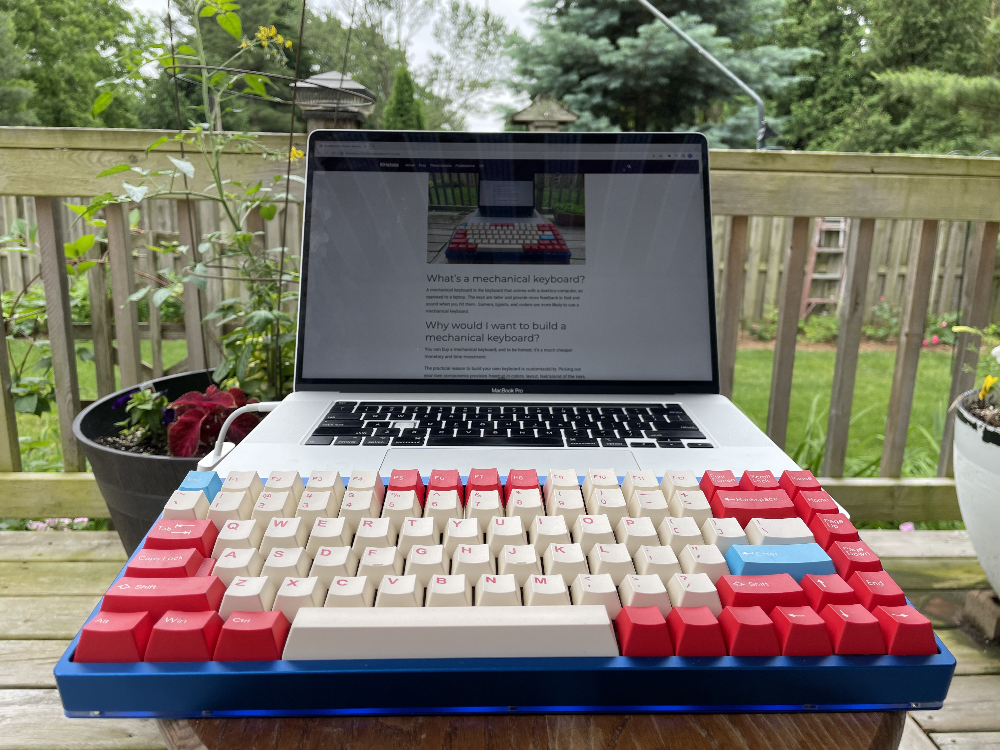

This blog post details a DIY project I did last summer – building a mechanical keyboard. I’m no expert, but I enjoyed the process of building the keyboard so much that I thought I would briefly walk through the steps and share helpful resources. Even if you have no interest in building your own, I hope it encourages you to learn something new that you may have initially felt intimidated by!

What’s a mechanical keyboard?
A mechanical keyboard is the typing unit that comes with a desktop computer, as opposed to a laptop. The keys are taller and provide more feedback in feel and sound when you hit them. Gamers, typists, and coders are more likely to use a mechanical keyboard.
Why would I want to build a mechanical keyboard?
You can buy a mechanical keyboard, and to be honest, it’s a much cheaper monetary and time investment. Practically, the reason to build your own keyboard is customizability. Picking out the components provides freedom in colors, layout, feel/sound of the keys, and more. Yet the primary reason people do it is that it’s fun. If you enjoy DIY projects, you’ll probably enjoy the challenge that comes with building your own keyboard.
Personally, I decided to build my mechanical keyboard because I was bored during quarantine after catching COVID-19 last summer. I texted my dad at 1AM to see if I could use his soldering iron, and the rest is history.

What components do I need to buy?
Picking out the components can be overwhelming! Yet it boils down to six main pieces you’ll need:
Case
The case is the outside of your keyboard. The size of the case you choose will limit how many keys you can have on your keyboard. Case sizes are described in percentages, i.e. 100%, 80%, 75%, 60%, 40%, which corresponds to how many keys fit on the board.
PCB
The Printed Circuit Board (PCB) is the electronic circuitry of your keyboard. You will need to choose a PCB that fits into whatever size case you’ve picked. One option with a PCB is whether it has RGB underglow on it, which means it has tiny lights on it that you can program to display different colors. If you want these lights to show, you should find a case and/or key caps with some aspect of transparency.
Another option for the PCB is whether you attach the keys via “hot swap” or “soldering”. If you choose hot swap, you just click the keys into place. However, most PCBs require you to solder the key switches (discussed below) to the circuitry on the board.
Keyboard plate
Keyboard plates are what you put on top of PCBs to hold your keys in place. You can choose from aluminum, brass, or steel. If you’re feeling overwhelmed, this isn’t something you should stress about. You can barely see it below the keys, so color doesn’t matter much, and the differences in sound/material from the material seem minimal to me. You should make sure to get one that matches the layout of the keys that you want, though.
Key switches
This is a fun choice! Key switches are what go below the keys to provide the majority of sound and feel. You can choose from many different brands, e.g. Cherry MX or Gateron, and types of switch feels, e.g. tactile, linear, clicky. I won’t go into all the differences here, but you should know that switch colors correspond to certain sounds/feels. The color of the switch won’t be seen unless you have translucent key caps. I discovered the world of typing test videos while I was picking out key switches.
Key stabilizers
Key stabilizers are necessary but a bit boring. They go beneath the wider keys like space bar and shift to help distribute the weight of your finger to press the button. It is common to lubricate the key stabilizers before you install them so that these keys are easier to press.
Key caps
Key caps are, in my opinion, the most exciting part! They go on top of the switches and are the most visible part of the keyboard. You can choose the material and colors, and either buy as a set or pick out unique custom keycaps.
Soldering equipment
Unless you get a hot swap PCB, you’ll need a soldering iron, solder wire, something to remove excess solder (i.e. solder wick or sucker).
My Build
These were the components I used. If I were to do it again I would pick another type of switch besides Cherry MX Brown… they work great but they’re a bit boring. I spent some time perusing builds on reddit (r/Mechanical Keybards) before I bought my components.
- Blue aluminum KBD75 V2 Case with acrylic midlayer to show RBG lighting
- KBD75 Rev 2.0 Solderable PCB
- KBD75 Brass plate
- KBD75 Foam pad
- Cherry screw in stabilizers
- Cherry RGB Brown switches
- Retro blue and red keycaps
- Soldering equipment: I borrowed my dad’s Hakko FX-601 iron and used a sharp cone-shaped tip. I also used rosin core solder wire, a solder wick and brass sponge for removing solder. I later purchased a solder sucker, which I recommend for removing soldering.

The steps
I’ll briefly outline the steps to building the keyboard below. If you’re actually in the process of building, I highly recommend finding a recorded live stream and/or tutorials on Youtube to walk you through the process. I found one by Taeha Types for my exact build, and watched it almost in entirety.
1. Test your PCB
First you’ll want to download a keyboard programming app like VIA, plug your keyboard into your computer, take a pair of tweezers, and test each point of key circuitry on your PCB plate.
2. Lubricate the stabilizers
If your PCB plate is working properly, go ahead and add lubricant and put together your stabilizers. I found the whole process a bit tricky, but Youtube helped a lot. There are special lubricants made for keyboards, but I was impatient and used silicone lubricant that I already had.

3. Place your stabilizers on the PCB
Time to click the stabilizers into place! You can put the respective keycaps on (space bar, shift, backspace, etc.) and make sure you like the feel at this point.
4. Add the plate and click the key switches into the PCB
You can now overlay your plate on the PCB and start clicking each key switch’s metal prongs into the small holes on the PCB. You should feel a click when it locks into place, and the switches should not fall out if you flip the board over.
5. Soldering
This was hands-down my favorite part of the entire process. Soldering (pronounced saw-der-ing) is SO much fun. There’s a ton of videos online about it, and you can buy a kit to practice if you want, but honestly I just went for it. You basically melt a piece of metal (solder) and then place the soldering iron right next to the key switch prongs and PCB ring of metal to create an electrical conduction.
One important note with soldering is that you should wait a day and retest your keys to make sure the conduction stayed. I had an issue where I would successfully test the keys about five minutes after soldering, but the next day the same keys would no longer work. I finally realized this was because I was soldering outside on a summer night (to avoid the fumes). As the sun went down, my soldering iron was no longer as hot as it said it was (~400° Fahrenheit) because the wind/outside air was cooling it down.
This is what my final soldered PCB and switches looked like. Each of the keys has two small mounds of solder creating an electrical conduction between the switch and the PCB. These look like small silver balls.

6. Stack and screw
Once all your keys’ electrical connections work, you can add your key caps. Finally, stack all the pieces together (case, foam plate, plate/PCB/switches/keys) and tighten the necessary screws.
7. Type away
Enjoy the click-clack of your brand new custom mechanical keyboard!
Lessons learned
In the end, the process of learning to build a mechanical keyboard felt just like learning any new concept in statistics/data science. The knowledge took some time to find, and the jargon was a bit intimidating, but after spending some time sifting through information I could always find what I needed. The entire process was very enjoyable, and I’m already looking forward to my next build!